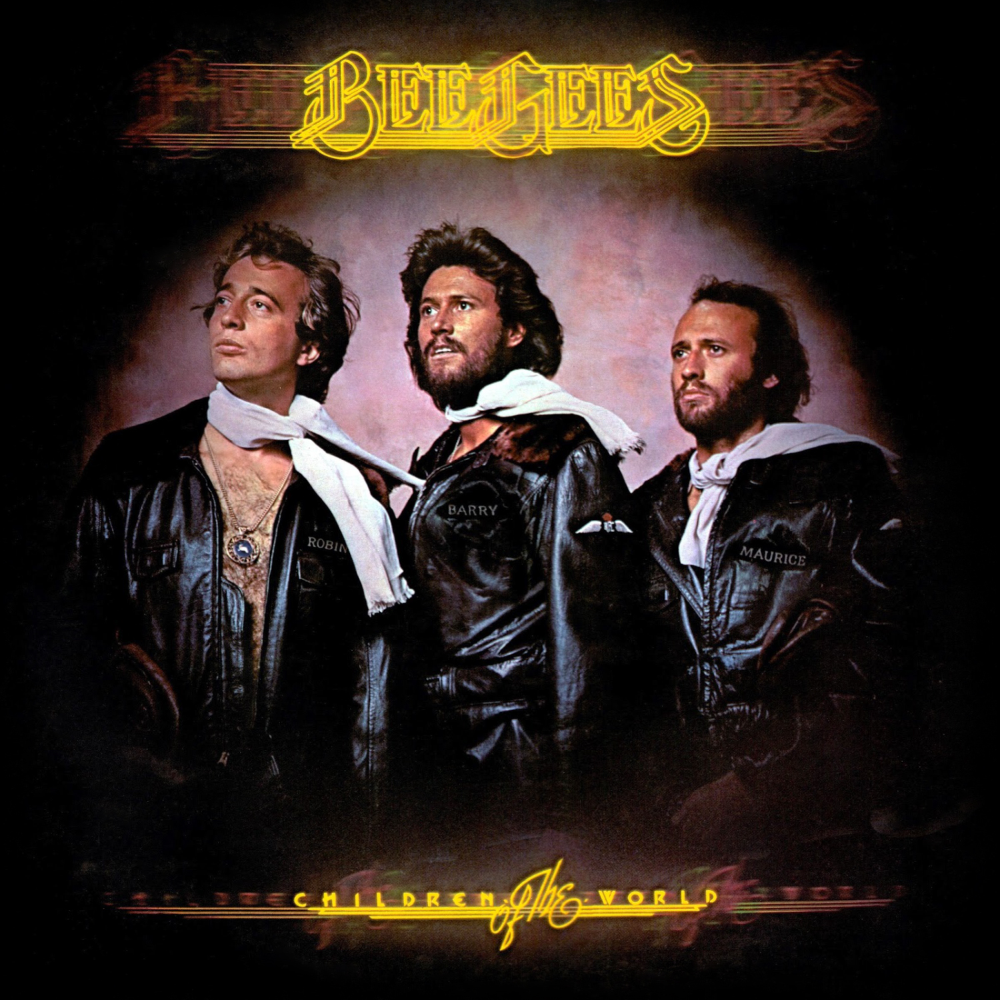

Vinyl Review

Children of the World
Bee Gees
As a passionate music lover, I eagerly explored the Bee Gees' tenth studio album, "Children of the World,"
on vinyl. Released in 1976, this classic album marks the band's full embrace of the disco sound that defined
the era, showcasing their ability to create infectious, danceable tunes while maintaining their signature
vocal harmonies. Produced by the Bee Gees themselves, along with Albhy Galuten and Karl Richardson,
"Children of the World" is a must-have for fans of the band and disco enthusiasts alike.
"Children of the World" opens with the unmistakable groove of "You Should Be Dancing," a track that has
become synonymous with the Bee Gees' disco era. The song features a driving beat, infectious melodies, and
the band's signature falsetto harmonies, making it an irresistible dancefloor anthem that still resonates
with listeners today.
Another standout track is "Love So Right," which highlights the Bee Gees' ability to craft soulful, emotive
ballads that showcase their exceptional vocal talent. The song's lush instrumentation, heartfelt lyrics, and
the brothers' harmonious vocals make it a memorable and timeless addition to the album.
"Boogie Child," an upbeat, funky tune, demonstrates the Bee Gees' versatility and their ability to
incorporate diverse musical influences into their sound. The track's catchy chorus, driving rhythm, and the
band's smooth, layered vocals make it a standout moment on "Children of the World."
"Lovers," a more introspective and tender ballad, features the Bee Gees' signature harmonies and a delicate,
emotive melody. The song's heartfelt lyrics and the band's passionate vocal performance create an intimate
atmosphere that draws the listener in.
The vinyl edition of "Children of the World" offers a warm, authentic listening experience that brings out
the best in the album's infectious disco tunes and soulful ballads. The depth and richness of the analog
format perfectly complement the Bee Gees' harmonious vocals and the album's lush instrumentation, making it
a must-have for fans and collectors of '70s disco music.
Final Verdict: "Children of the World" is a classic album that showcases the Bee Gees' embrace of
the disco era, featuring infectious dancefloor anthems and soulful ballads that highlight the band's
exceptional vocal talent. The vinyl edition provides an authentic and enhanced listening experience that
captures the essence of the Bee Gees' harmonious sound, making it a must-listen for fans of the band and
disco enthusiasts alike.
Did you enjoy my review of this album? Check out one of my favorite album reviews below or see a
list of my reviews!
More importantly, I'm always looking for new music to enjoy. Let
me know what you're currently listening to!
My Favorites
Read why these albums are my all-time favorites!